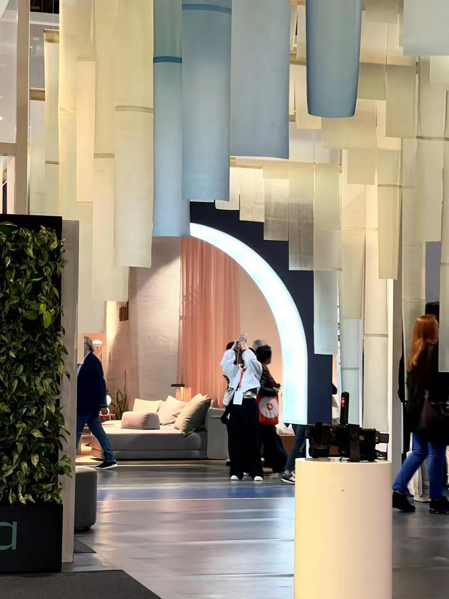
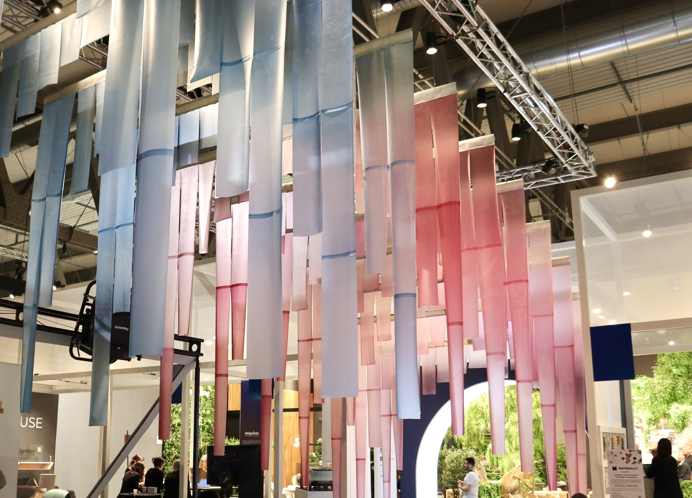

2023 Milan Design Week X Designtech
The Milan Design Week in April is a trendsetter in the design field and a grand celebration where creative minds from around the world come together, collide, and embrace openness, freedom, and brightness.

At this enchanting party, PEELSPHERE material, rooted in the concept of "circular aesthetics," will contribute unique and fresh energy. This time, we have explored new solutions through material exploration. PEELSPHERE aligns with sustainable design and collaborates with Milan Design Week's spatial installations. Currently, PEELSPHERE materials have entered the stage of mass production trials, and construction of the mass production facility will be completed in the second half of 2023. Moving forward, PEELSPHERE will continue to delve into the research and development of other sustainable solutions, explore and promote the deep integration of materials and synthetic biology. Through exquisite circular design and creative functionality, we aim to seamlessly incorporate biomaterials into various fields such as fashion, home decor, automotive, and space installation, connecting with everything. We are delighted that our large-scale exhibition at Milan Design Week has attracted attention from various sectors and become a popular spot to visit.
The PEELSPHERE® new material was also shortlisted for the 2021 Wallpaper* Design Award for "Best Sustainable Design." Looking back at the birth of PEELSPHERE®, it is closely related to the city where Youyang Song lives and her ideas for change. Berlin, where she studied, produces about 60,000 to 70,000 tons of biological waste each year, of which about 17% is fruit waste, mainly used in the fields of fertilizer and natural gas production. She hoped to intervene from the perspective of a designer, turning waste into treasure, and thus proposed the concept of circularity for new materials by observing the lifespan of traditional textiles, creating an ecosystem through recycling, redesigning, and remanufacturing, thereby promoting sustainable lifestyles. Thus, the birth of PEELSPHERE® gave biological waste the possibility of becoming new materials.
It is precisely due to the sustainable material properties and lightweight, translucent design aesthetics, combined with the team's efficient delivery capabilities, that PEELSPHERE has been able to explore more diverse innovative collaboration models and design applications. At Milan Design Week 2023, high-quality material displays and inspiring collaborations with partners continuously push the boundaries of interdisciplinary creativity. This large-scale spatial installation utilizes PEELSPHERE's sustainable biomaterial, showcasing our star product, ALGAESKIN, in a lighter and mass-produced form within the exhibition space for the first time. It presents a gigantic yet lightweight grand exhibition, reflecting the diverse application scenarios and design versatility of sustainable materials.
The metaphor of a bridge is often understood as a structure that connects points A and B, representing a desire to serve as a place for communication and interaction between different realities, consolidating knowledge and emerging knowledge. At the same time, it symbolizes a medium that can lead us to discover new paths. PEELSPHERE, through the use of innovative bio-based materials, has created a bridge for the Design Tech concept, embodying the concepts of fusion, innovation, possibilities, knowledge, and collaboration. Supported by the cutting-edge technology innovation platform Designtech Hub, curated by PricewaterhouseCoopers, and in collaboration with Forbes Media, PEELSPHERE serves as the designated material collaborator for the spatial installation, presenting a gigantic sustainable material suspended installation.
With advanced creativity and technology, we swiftly responded to the demand by providing large quantities of sustainable new materials, creating a lightweight, creative, and recyclable salon space. Countless translucent fabrics are suspended within the space, serving as a response to the theme of "sustainable design" and embodying PEELSPHERE's focus on the interaction between materials and space. From April 18th to 23rd, 2023, during Milan Design Week, the themes of cutting-edge technology and sustainable development continued to generate hot discussions, bringing together designers, creative individuals, entrepreneurs, and media to share inspiration and experiences.
In the mobile salon of this exhibition, "The Future of Sustainable Design" is not only a topic for the forum but also runs through the entire event space in the form of booth products and installation designs. To gain insights into today's design trends, the rapid development of sustainable materials is an integral part that cannot be ignored. It combines high technology, circularity, artistic value, and aesthetic value, harboring unlimited possibilities. So, how can sustainable materials activate different design scenarios? How can sustainable materials specifically provide inspiration and circular momentum for spatial expression? These are the questions that PEELSPHERE contemplates, and they serve as the starting point for our exploration at Milan Design Week.
01/Jan/2023